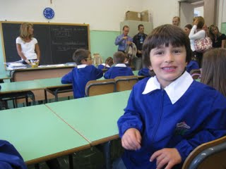
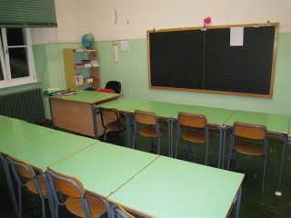

During the past year many changes have been made to the Italian school: the reintroduction of one main teacher, the mandatory use of a uniform, the grading of the students’ behavior, just to say a few. However, besides these recent changes that have taken place because of a new law (Riforma Gelmini), many are the differences that I’ve noticed after the first days of school. Obviously my notes are made by comparing the American system to the Italian one, and most precisely to the specific schools my kids are (and were) attending. Books - Books are provided by the government, the only expense for the student’s family is for the class supplies (paper, pens, erasers, uniform, etc.) . I spent about Euros 100 (~$150) for both kids. Notebooks - Kids have a notebook for each subject. Hours - Kids can either go to school from 8am to 1pm, including Saturday, or from 8am to 4pm, excluding Saturday. Recess - Kids attending school from 8am to 1 pm have only one 20 minute recess (around 10am). They stay in class. Most schools don’t have a playground. Volunteers - Parents are not allowed to volunteer in class, unless they are holding a certain level of expertise in a field or topic that the students are learning. In this case they can teach in class for a few hours. Diary - Kids have a diary to keep track of the homework they need to do. Fundraising Auctions - Auctions are not held in public schools. Communication - Families and teachers communicate through the student’s diary. Emails are currently not used. Office - In my kids’ school, the school office is open only one hour in the morning, and one hour in some afternoons. Physical Education (P.E.) - Kids need to have specific clothes (white t-shirt and black shorts) and shoes for P.E. They keep them in a bag that remains at school (until washing is required…). Principal - Some schools share the same principal. In our case, we share the principal with four other schools. Religion - Catholic religion is taught in all public schools. Kids have the right to refuse the attendance, in which case they are moved to another class for alternative activities. The crucifix is present in all classes. Classrooms - Besides the desks and chairs, my kids’ classrooms have a blackboard with chalks, and a metal armoire for supplies. If it wasn't for the 2009 calendar on the wall, it looks exactly the same as when I was there 30 years ago.{kind=link}
